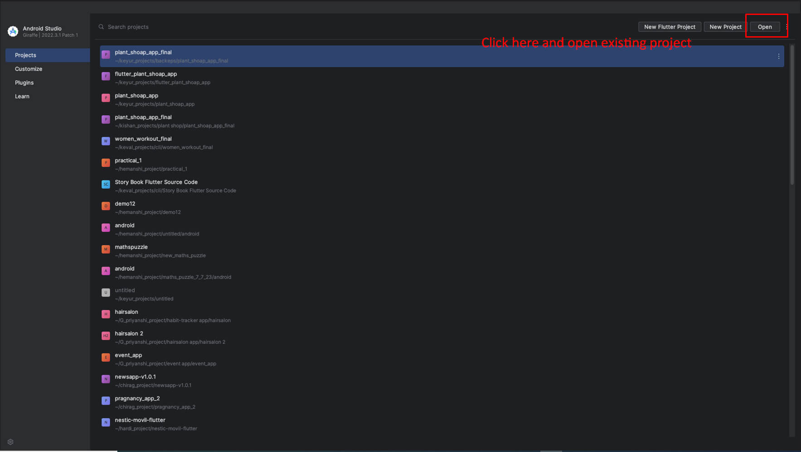
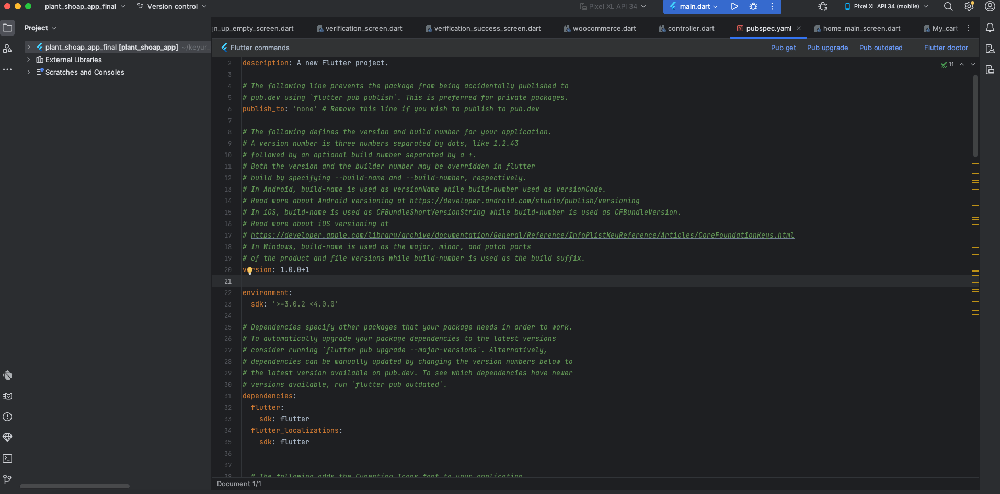
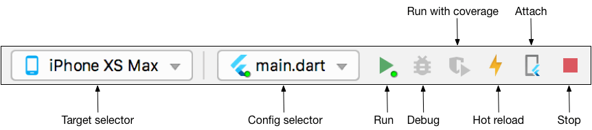
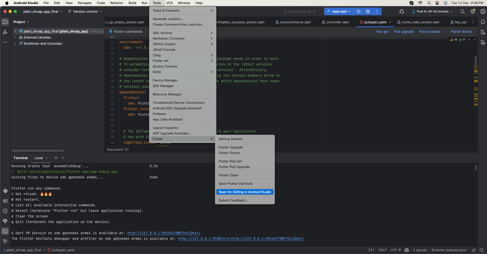
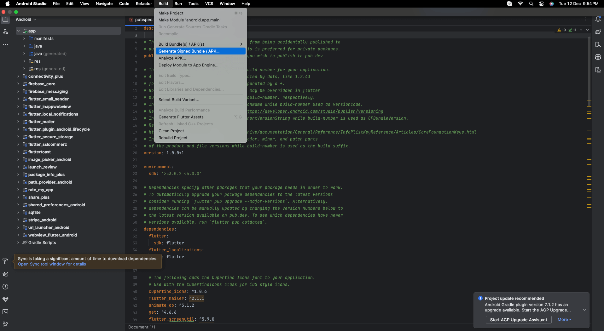
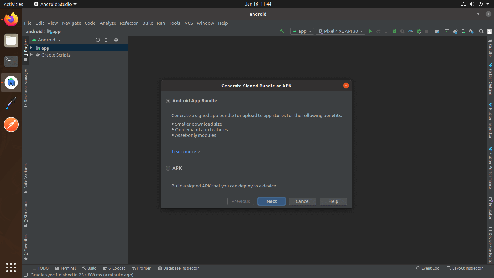
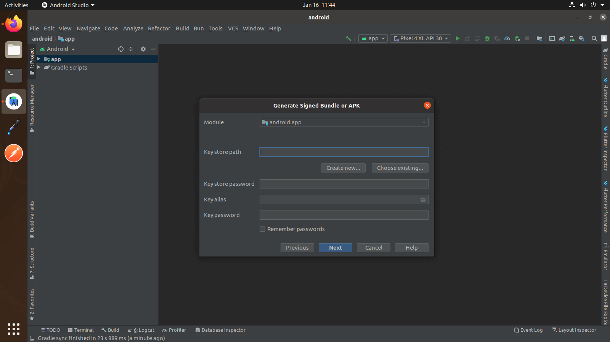
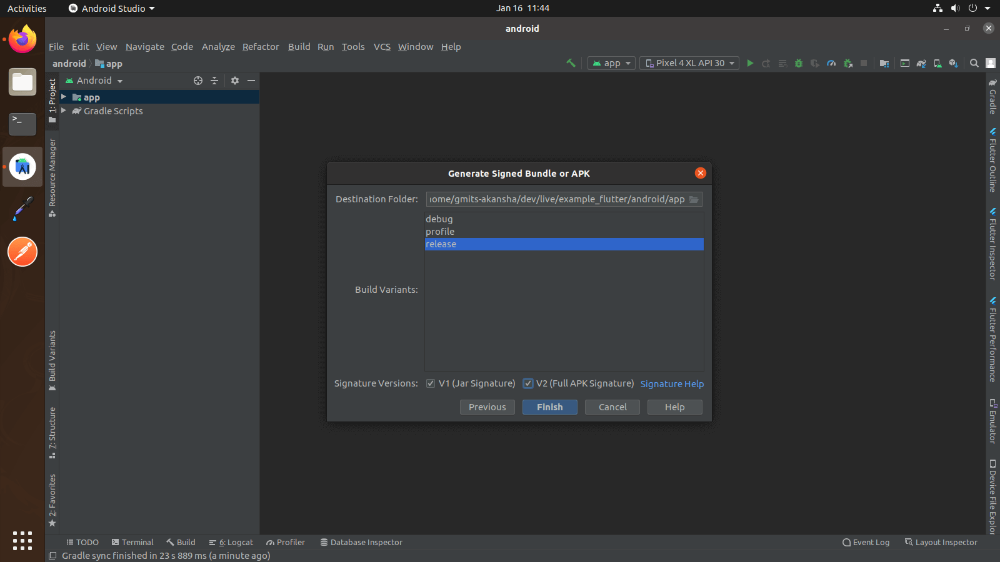
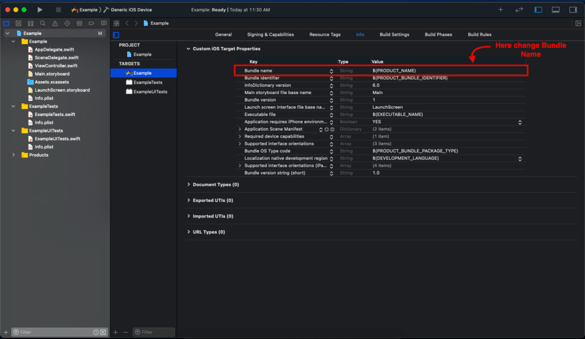
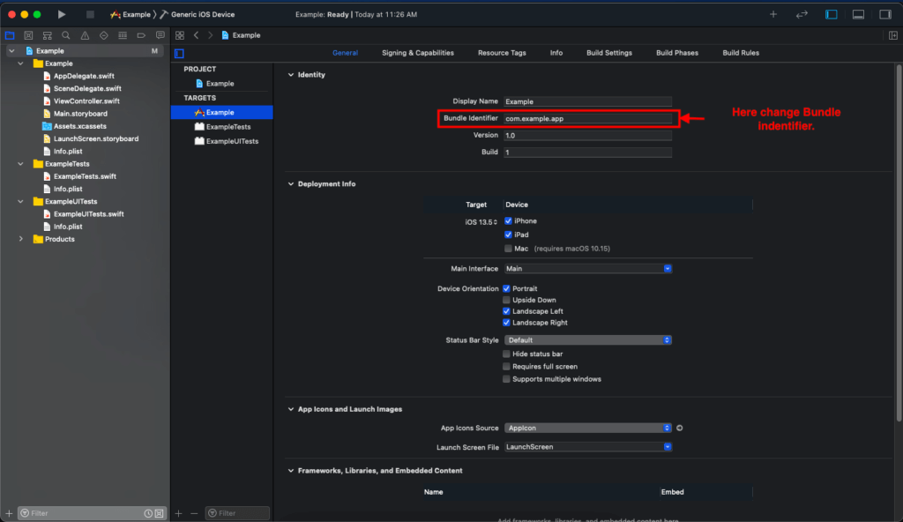

Introduction to Giftly App - Online Plant Store App templates
Giftly: A robust Flutter 3.x app for Android and iOS, seamlessly connecting users to a vibrant online plant store powered by WooCommerce, offering an immersive shopping experience.
It comes with 1000+ hours save time for custome app development. It works great with both android and iOS.
Flutter is Google’s UI toolkit for building beautiful, natively compiled
applications for mobile, web, and desktop from a
single codebase. It is
very
easy to learn and currently it is getting more and more popular. With this blog
post, you will learn some basic stuff about Flutter and after reading it, you
will be able to create a simple application using this technology.
Click here to check out more details about
flutter.
1 Download the following installation bundle to get the latest stable release of
the Flutter SDK:
2 Extract the zip file and place the contained flutter in the desired
installation location for the Flutter SDK (for example, C:\src\flutter; do not
install Flutter in a directory like C:\Program Files\ that requires elevated
privileges).
Step 2 : Update your path
If you wish to run Flutter commands in the regular Windows console, take these
steps to add Flutter to the PATH environment variable:
From the Start search bar, enter ‘env’ and select Edit environment variables
for your account.
Under User variables check if there is an entry called Path:
If the entry exists, append the full path to flutter\bin using ; as a
separator from existing values.
If the entry doesn’t exist, create a new user variable named Path with the
full path to flutter\bin as its value.
Info
Note that you have to close and reopen any existing console windows for these
changes to take effect.
You are now ready to run Flutter commands in the Flutter Console!
Step 3 : Run flutter doctor
From a console window that has the Flutter directory in the path (see above), run
the following command to see if there are any platform dependencies you need to
complete the setup:
c:\src\flutter>flutter doctor
If you find any issue during environment setup, please go online Click
here
Download the following installation bundle to get the latest stable release
of the Flutter SDK:
Download SDK and extract downloaded file, just double click on that. and
just copy extracted folder and paste it to your desired location (for
example, Documents\flutter).
Step 2 : Update your path
Warning
Path variable needs to be updated to access “flutter” command from terminal. you
can just update path variable for current terminal window only. and if you want
to access flutter commands from anywhere in terminal, we need to update SDK path
permanently.
To update PATH variable, we need to open terminal.
To update PATH variable for current terminal window only, then enter this command
"export PATH="$PATH:`pwd`/flutter/bin"" and hit enter key.
To update PATH variable permanently, then Open or create .bash_profile
file. to open or create that file, then enter "sudo open -e
$HOME/.bash_profile" and hit enter key.
Append below line to bash_profile file at bottom of all other content. "export
PATH="$PATH:[PATH_TO_FLUTTER_GIT_DIRECTORY]/flutter/bin"" as
[PATH_TO_FLUTTER_GIT_DIRECTORY] is actual path of SDK folder.
Run this command on terminal "source $HOME/.bash_profile" to refresh PATH
variables.
Then check whether our SDK is successfully installed or not.
You are now ready to run Flutter commands in the Flutter Console!
Run "flutter doctor" into terminal, If you are getting check list of
flutter sdk requirements, it means SDK is successfully installed on your
machine. and you can start building flutter apps on your machine.
If you find any issue during environment setup in macos, please go online Click
here
Download the following installation bundle to get the latest stable release
of the Flutter SDK:
Download SDK and extract downloaded file, just double click on that. and
just copy extracted folder and paste it to your desired location (for
example, Documents\flutter).
Step 2 : Update your path
Warning
Path variable needs to be updated to access “flutter” command from terminal. you
can just update path variable for current terminal window only. and if you want
to access flutter commands from anywhere in terminal, we need to update SDK path
permanently.
You’ll probably want to update this variable permanently, so you can
run flutter commands in any terminal session. To update PATH variable, we need
to open terminal.
Run source $HOME/.
to refresh the current window, or open a new terminal window to
automatically source the file.
Verify that the flutter/bin
directory is now in your PATH by running:
echo $PATH
Verify that the flutter
command is available by running:
which flutter
You are now ready to run Flutter commands in the Flutter Console!
Getting Started (Build & Run)
Important
All below steps are must be followed to build and run application
Download Project
Download and find the your project folder, use your preferred IDE
(Android Studio / Visual Studio Code / IntelliJ IDEA) to run
the project.

Get Dependencies
After you loaded project successfully, run the following command in the terminal
to install all the dependencies listed in the pubspec.yaml
file in the project's
root directory or just click on Pub get
in pubspec.yaml fileif you don't
want to use command.
flutter pub get
Important
All below steps are must be followed to build and run application

Build and Run App
Locate the main Android Studio toolbar.
In the target
selector, select an Android
device for running the app. If none are listed as available, select
Tools >
Android > AVD Manager and
create one there. For details, see Managing
AVDs.
Click the run icon in the toolbar, or invoke the menu item Run > Run.

After the app build completes, you’ll see the app on your device.
If you don’t use Android Studio or IntelliJ you can use the command line to run
your application using the following command
Important
Below step requires flutter path to be set in your Environment variables. See
https://flutter.dev/docs/get-started/install/windows
flutter run
You will see below like screen after you have build your app successfully
Try hot reload
Flutter offers a fast development cycle with Stateful Hot Reload, the ability to
reload the code of a live running app without restarting or losing app state.
Make a change to app source, tell your IDE or command-line tool that you want to
hot reload, and see the change in your simulator, emulator, or device.
If you want add/change android code, click on Tools->Flutter->Open Android module in Android Studio Or File->Open ->open android
module inside your project
Important
Don't change package name inside android/app/src/main/AndroidManifest.xml file
Open Android Studio.
Select Open an existing Android Studio Project.
Open the android directory within your app.
Wait until the project has been synced successfully. (This happens
automatically once you open the project, but if it doesn’t, select Sync
Project with Gradle Files from the File menu).
Now, click on Run button.
Change Application Name
You must want to change your application name. This is how you can do.
Follow the below step.
Open /android/app/src/main/AndroidManifest.xml and specify your application
name.
Go to in your project & then Tools -> Flutter -> Open for Editing in Android Studio as shown below

If your 1st step option is not available then select File -> open -> Select main folder -> android.
Open Project it in New Window
Wait for while until project synchronization. After that Go to Build -> GenerateSigned Bundle/APK...

Select Android App Bundle or APK Option as per your need. (Android App Bundle is best solution) and click Next button.

Select Create new.. option to generate new Signed key (When you release your app First Time) and Fill all options. Refer this link

Click Next button and you will get following screen...

Select Build variants - release and Signature versions both V1 and V2 respectively as shown above screen shot and click Finish button.
Wait for a while until Gradle Build Running process complete.and finally you will get the Generate Signed APK : (APKs) generated successfully . from that click on Locate option to get Location of your Generate Signed APK Key.
iOS Configuration
Open Project in Android Studio
Open android studio in your project.
Open terminal in android studio.
Pub get.
Open terminal cd ios.
pod install.
run project in xcode.
Open Project in Xcode
Open Xcode.
Select Open another Project.
Open the iOS directory within your app.
Now, click on Done button.
Change Bundle Name
Select your project file icon in Group and files panel.
Then Select Target -> Info Tab.
At last change Bundle Name.

Change Bundle Identifier.
Bundle Id is a unique Identifier of your of app on iOS and MacOS. iOS and MacOS
use it to recognise updates to your app. The identifier must be unique for your
app.
Select your project file icon in Group and files panel.
Select General Tab.
After Select General tab you can see the details of your application.
In Identity section, rename your Bundle identifier.

Change App Icons
see How to Generate App Icons?
In Group and files panel find “Assets.xcassets” folder.
In Assets.xcassets folder replace AppIcon.
WordPress Setup
General Information
Thank you for choosing our plugin. We hope you enjoy building your project with us. It is apowerhouse of great features and powerful functionalities that would take months to develop.
Help and Support
The expert team at templatevilla is always happy to help you with any questions or concerns you
encounter. If you need any support with the item, please contact us through our email and support
portal.
To use Plugin, you must be running WordPress 5.0.0 or higher, PHP 7.3 or higher, MySQL 5.6 or higher
2. Recommended PHP Configuration Limits
White screen, demo content fails when importing, empty page content and other similar issues are all
related to low PHP configuration limits. The solution is to increase the PHP limits. You can do this
on your own, or contact your web host and ask them to increase those limits to a minimum as follows:
max_input_vars = 3000
memory_limit = 128M
max_execution_time = 300
max_input_time = 300
upload_max_filesize = 64M
post_max_size = 64M
3. Enable JWT Authentication
WordPress JSON Web Token Authentication allows you to do REST API authentication via token. It is a
simple, non-complex, and easy to use.This plugin probably is the most convenient way to do JWT
Authentication in WordPress.
Enable PHP HTTP Authorization Header
Shared Hosts
Most shared hosts have disabled the HTTP Authorization Header by default.
To enable this option you’ll need to edit your .htaccess file by adding the following:
1. Open project_root_directory/android in Android Studio
2. Wait for indexing
3. Now run your application from android module
Help & Support
We like to hear you out when you get stuck or encounter difficulty with our products. As soon as you buy one of our products – you can open a support ticket and share your concern right away.
Skype Templatesvilla or email:templatevilla007@gmail.com
Support Policy:
It is recommended that before submitting a ticket you take a close look at product documentation (Docs folder in the
archive you have downloaded from Themeforest/Codecanyon). To get technical support and assistance,
you need to have a valid purchase code. You will find this when you SignIn your Codecanyon/Themeforest “Download” page.
Click on the product’s download link.
Please Note:
Free support policy includes troubleshooting, technical assistance with the product only.
It does not include any customization, additional features integration or concerns about third-party plugins compatibility.
But, support is applied to plugin(s) we have developed and integrated ourselves. We appreciate your understanding!
You can expect answer within 24-48 hours, usually as soon as possible in the order they were received.
All support requests are being processed on business days (Monday to Friday) from 10:00 to 18:00 (GMT +05.30). We are in GMT+5:30 time zone.
We address all the support queries 5 days weekly on the first-come, first-solve basis (Saturday, Sundays off).
We like getting positive feedback from our customers, and this is why we do our best to earn it! Write a review: https://codecanyon.net/downloads
Change Log
Version 1.0 - 28 December 2023
Initial Release
Thank you for purchasing our application
Thank you for purchasing our application! We're glad that you found what you were looking for. It is our goal that you are always happy with what you bought from us, so please let us know if your buying experience was anything short of excellent. We look forward to seeing you again.